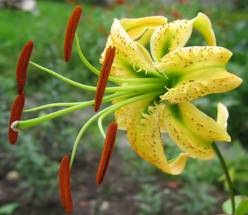
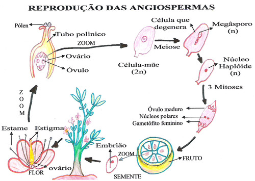

Angiosperma!
É a planta mais abundante e elaborada do reino Plantae, encontrada em ambientes terrestres ou aquáticos, secos ou úmidos.
Características:
- Flores
- Possuem flores como estruturas de reprodução.
- Frutos
- Possuem frutos para proteger a semente.
- Plantas elaboradas
- Tem todas as partes de planta conhecidas.
- Dupla Fecundação
- A oosfera e as células polares são fecundadas.
Sobre
As plantas angiospermas formam o grupo de vegetais mais diversificado do planeta, com mais de 235 mil espécies conhecidas. Existem angiospermas que chegam a mais de 100 m de altura e outras com apenas 1 mm. Com exceção de regiões de clima muito frio, as angiospermas são as plantas mais abundantes em todos os biomas terrestres, sendo encontradas nos mais variados ambientes. Elas vivem no solo, na água ou sobre outras plantas.
As angiospermas (do grego aggeion = bolsa; sperma = semente) são plantas que apresentam raiz, caule, folhas e sementes. Porém, ao contrário do que ocorre com as gimnospermas, as angiospermas apresentam flores e suas sementes são protegidas por um fruto.
Assim, as angiospermas são o único grupo de plantas a apresentar flores e frutos. Vejamos algumas características das estruturas presentes nas angiospermas.
Reprodução
As flores são as estruturas responsáveis pela reprodução das angiospermas. No interior das anteras, órgãos reprodutores masculinos, formam-se os grãos de pólen que contêm os gametas masculinos. Eles são transportados pelo vento, por insetos ou por outros agentes polinizadores até a abertura superior do órgão reprodutor feminino.
Além dos gametas masculinos, os grãos de pólen apresentam uma célula responsável por originar o tubo polínico. É pelo tubo polínico que os gametas masculinos se encontram com os gametas femininos no ovário, onde ocorre a fecundação.
Após a fecundação, inicia-se o desenvolvimento do embrião, que fica protegido pela semente. Ao mesmo tempo, a partir do ovário, desenvolve-se o fruto, que. por sua vez, protege a semente.
Normalmente, associamos a palavra “fruto” a algo comestível, carnoso, suculento e adocicado. Porém, nem sempre isso é verdade. O fruto verdadeiro é o resultado do desenvolvimento do ovário da fior, após a fecundação.
Existem algumas plantas cuja parte comestível nâo é proveniente do desenvolvimento do ovário, mas sim de outras partes da flor, como a sua haste (no caso do caju) ou sua base (no caso da maçã). Ver ilustração da página 160. Essas estruturas são chamadas de pseudofrutos (falsos frutos).